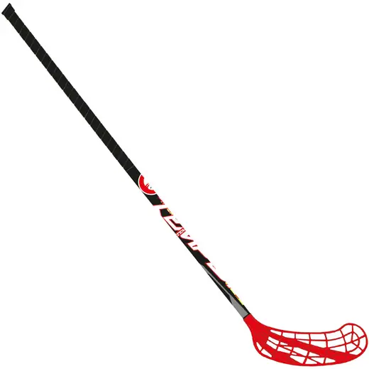
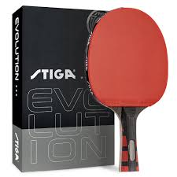
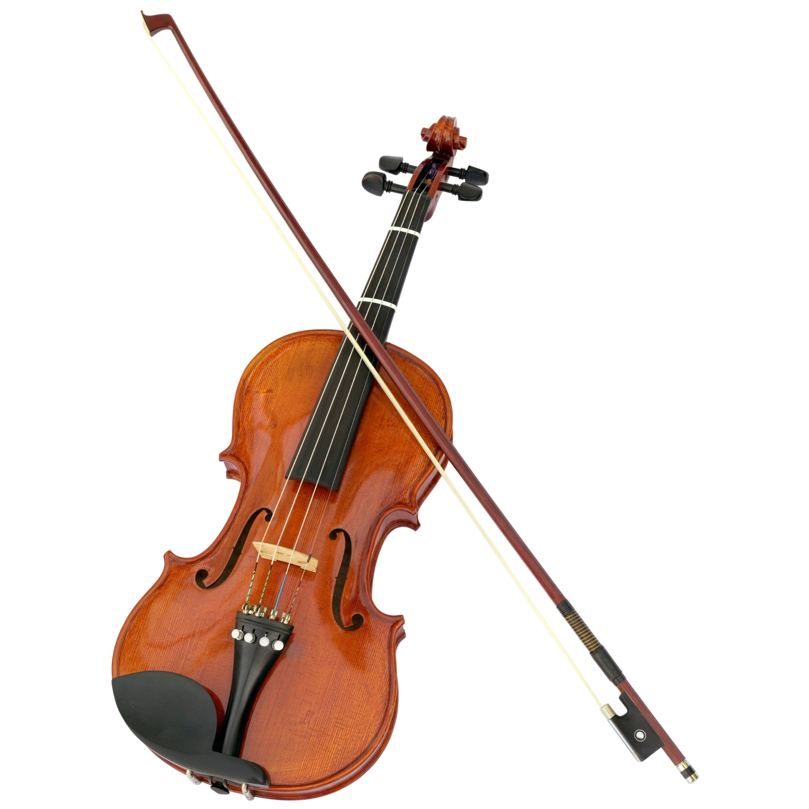

Co mě baví
Florbal

Florbal je moje srdcovka. Rychlost, týmová hra a dynamika na hřišti.
- Pravidelné tréninky
- Týmová spolupráce
Stolní tenis

Když nehoním děrovaný míček po hale, hraju s tím menším míčkem za stolem. Pinec vyžaduje pekelné soustředění a rychlé reflexy.
- Rychlé reflexy
- Hra s přáteli
Housle

Sport vyvažuju hudbou. Hra na housle mě učí trpělivosti a pomáhá mi se uvolnit po náročném dni.
- Klasická i moderní hudba
- Cvičení techniky